contents | previous | next THE night that followed this conversation was the most uneasy Rosalie had ever yet known. From what had passed she could not doubt but that Mrs. Vyvian knew of her marriage; yet it was incomprehensible if she did, that she should have expressed so little anger or diaprobation: yet what else but her knowing of the mutual attachment between her nephew and her protegee could have urged her to speak as she did? The various conjectures that agitated the mind of Rosalie, allowed her not to sleep. She had never till now tasted, in its full bitterness, the pain that is inflicted on an ingenuous mind by concealment and dissimulation. Conscious that she merited the loss of Mrs. Vyvan's good opinion,
) View image of 241 View image of 241 and that the longer this mystery was continued on her part the more unpardonable it would appear, she endeavoured to reason herself into a resolution of unbosoming herself to Mrs. Vyvian, and rather enduring her reproaches for precipitancy and indiscretion, than suffer the misery of living in continual dread of being detected in a falsehood. The most probable conjecture she could form was, that Mrs. Vyvian knew the truth, and had held the conversation she had heard the preceding evening to give Rosalie an opportunity of declaring what was already known. This supposition strengthened her wavering resolves, and she arose in the morning, believing she had force of mind enough to disclose the secret that weighed upon her mind; but when a note came from Mrs. Vyvian requesting to see her as soon as she had breakfasted, her courage at once forsook her, and hardly could she find the strength to obey the summons.
) View image of 242 View image of 242On her arrival, however, at the house of Mrs. Vyvian, she found nothing remarkable in the manner or looks of her friend, who seemed as to her health to suffer less than usual. Rosalie inquired, as she had been acustomed to do, if she should fetch a book—Mrs. Vyvian answered no; and bid her take her work. For some time the conversation ran on indifferent topics; at length contriving to bring it without abruptness to the point she wished, Mrs. Vyvian renewed the subject on which she had touched the day before. Rosalie, whose heart was beating so violently that she could hardly breathe, listened to her in silence. "I spoke to you yesterday, my love, (said she), with a desire to hear your sentiments on a matter very important to you. You say that you sometimes accuse yourself of not having sufficient prevoyance—of looking forward with too little solicitude to a fortune, which certainly promises
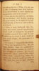 View image of 243but little prosperity.—What, if a way was to offer of escaping from these fears?—If an establishment in most respects unexceptionable were to be found?" "I am not my own mistress, you know, my dear Madam," said Rosalie, speaking this equivocation, for it could not be called a falsehood, in so low a voice as hardly to be heard. "That is true, (answered Mrs. Vyvian); but I think, indeed I am sure, your friends would not disapprve the proposal in question—indeed there can be one objection to it, which I think would not have much weight; the gentleman is a Catholic." "A Catholic!" repeated Rosalie faintly. "You are surprised, I see; but you know, Rosalie, there are considerations that may influence persons to overlook this difference of opinion. Tell me now ingenuously: should a man of that religion offer, whose circumstances, whose character, are such as would preclude all those fears that you, or those who love
) View image of 244 View image of 244you, might have as to your future fate?—Tell me, if you should hesitate to accept of his hand?—Remember I expect you to be candid——Would you receive such a man as your husband?" The first attempt Rosalie made to answer this question failed, she was unable to articulate a syllable; collecting, however, all her resolution, she at last found courage to say, "I am very sensible, Madam, that I ought to feel extremely grateful for the notice of any man of whom you have a good opinion;—but—my dear, dear benefactress, (added she in a voice that her agitation rendered indistinct, and rising from her seat), I cannot longer conceal the truth from you—I am already married." "Already married! (exclaimed Mrs. Vyvian with a tone and look of amazement);——Already married!—Merciful Heaven! and to whom?" "Can I hope, dearest and best of women, to be forgiven, when I tell you—O no!—I dare not—you will reproach
) View image of 245 View image of 245me, perhaps detest me, and cast me off for ever." "Speak, (said Mrs. Vyvian, trembling as much as the unhappy girl)—speak"....she had her salts in her hands, and her eyes were eagerly fixed on the face of Rosalie, who was compelled to support herself by holding the table. "Since you have just said, Madam, that a Catholic might, in your opinion, make such an alliance."——— "A Catholic!" cried Mrs. Vyvian, still more faintly. "I might hope, perhaps, (continued Rosalie), to be forgiven for every thing, but the presumption of becoming part of you family—of marrying a very near relation of your own." Rosalie might have continued her confession without interruption another hour, Mrs. Vyvian heard no more, but sunk back in her chair to all appearance lifeless. In an agony of terror, to which no words can do justice, Rosalie flew to-
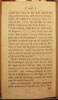 View image of 246wards her, then to the bell, which she rang with violence, and when her servants came, she assisted in carrying Mrs. Vyvian to her room, though she was herself in a situation but little better......"I am undone, (said she)—I shall never be forgiven.......No, I see that my more than mother cannot, will not, forgive me.—O Montalbert! why are you not here to plead with me for pardon?—What will become of your unhappy Rosalie, if her first, her best friend abandons and abhors her, while you are far far off, and unable to protect her from the insults of the rest of the world?" While Rosalie was making this mournful monologue on one side of the bed, the applications used by Mrs. Vyvian's woman were so successful, that she opened her eyes; but, turning them on Rosalie, she seemed shocked by the sight of her, and, without speaking, waved her hand that she might leave her. This was too much. Rosalie, regardless of the presence of the servant, threw her
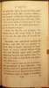 View image of 247self upon her knees by the bed side, and attempted to take Mrs. Vyvian's hand—she snatched it from her with abhorrence, and, speaking with great difficulty, said, "Wretched, most wretched girl—if you would not see me die before your face—go—I conjure you go." "Hear me but for one moment; let Hallam leave the room while I speak to you for the last time, if it must be so." The maid, who understood nothing of all this, and who felt no curiosity to know what it meant, restrained by some degree of terror, retired without being bid; and Rosalie again most earnestly imploring for pity and pardon, Mrs. Vyvian, in a voice at once shrill and plaintive, said—— "It is now I feel, in all its severity, the punishment I have deserved: long has the dread of it pursued me—long had it embittered every moment of my wretched existence—but at length it overtakes,
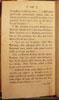 View image of 248it crushes, it destroys me......Miserable girl!—the unfortunate young man, to whom you believe yourself married—is—gracious God!—do I live to tell it—is your brother!" "My brother!—(cried Rosalie)——Heaven defend me!—My dear Madam—Mrs. Vyvian!——" Nothing occurred to her at that moment, but that the senses of her friend were gone. "You are my daughter, (said Mrs. Vyvian), the unhappy child of an unfortunate man, whose very name I never suffer to escape my lips." This confirmed Rosalie in the apprehensions that her mind was deranged; but, heart struck with horror, she could not speak. Mrs. Vyvian, after a short pause, proceeded—— "Destined from your birth to be an outcast—to appear a stranger even to your mother—I guiltily indulged myself with a sight of you, till Vyvian, my son, vicitim of my crimes———-"
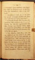 View image of 249"Vyvian! (cried Rosalie, not knowing what to believe)——it is not Vyvian, but Montalbert, who is my husband." "Montalbert!—and am I not then the wretch I thought myself?—O Heaven! hast thou yet mercy upon me!" "If dearest, dearest Mrs. Vyvain, you would but listen calmly to me———-" Terror, for still she apprehended that Mrs. Vyvian was become insane, again prevented her proceeding; nor was this impression weakened by the solemnity with which she now spoke. "Yes, Rosalie, (said she), you are my child—I am not mad—I am only miserable—yet not so very miserable as I thought I was. Oh! why have so many cruel people been endeavouring to embitter the sad hours of my unhappy life, by repeating to me continually that Vyvian was so strongly attached to you, that neither reason nor absence could cure him of his passion. They knew not that
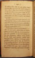 View image of 250in raising this idea in my mind, they poured into my heart the most fatal poison.—Alas! they knew not that the dread of this horrible crime drove from me my Rosalie—the dear, unhappy object of so many years of silent anguish and stifled solicitude." Rosalie, more and more amazed, and doubting the evidence of her senses, could only listen in breathless wonder, while Mrs. Vyvian, whose heart seemed to be already relieved, proceeded—— "Montalbert then is your husband.....Ah! my poor girl, what a store of future misery you have laid up, it is too probable, for yourself. I am now amazed at my own blindness. Many, many hours of the most cruel anxiety would have been spared me, had not so strong a prepossession been given me of Charle's frantic passion for you: yet I now wonder I did not discover that it was Montalbert you loved — that you were attached to somebody I was sure, and when I thought
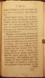 View image of 251it was Charles——oh! no words can do justice to the tortures that wrung my soul." Rosalie sighed deeply; but not knowing what to say that should express the mingled emotions she felt, she remained silent, still holding the hand of Mrs. Vyvian, who seemed to be collecting some of the presence of mind her late terrors had so entirely dissipated. The pause had something of horror in it. Rosalie watched her countenance with a fearful and anxious eye, still assailed by the idea of some temporary derangement of intellect: for how could she, whose parents were never even doubted, be the daughter of Mrs. Vyvian?—The whole scene appeared to be a dream, and, during this silence, Rosalie apprehended that she should again see her relapse into frenzy. Till these fears gradually subsided, as Mrs. Vyvian began with some degree of calmness to inquire into the particulars of the marriage; it was
) View image of 252 View image of 252legally and properly celebrated according to all her ideas." "But tell me, (added she, when this inquiry was at an end)—was Montalbert ingenuous with you?—Did he tell you that he depends for every thing, but a bare subsistence, on the bounty of his mother?—Did he tell you, that mother has prejudices the most unconquerable against the natives and the established religion of England?......Ah! my poor dear girl, the same softness of heart that destroyed me, has been, I fear, most dangerous to you. I cannot, (continued she, deeply sighing), I cannot now tell you the sad particulars of your birth....I have not strength either of mind or body—the horrible idea, that my unhappy, perhaps guilty, attachment would be punished by a yet more fatal one between my children, was so very terrible, that it could not be sustained.—I tremble still like a wretch, who having seen himself on the brink of a precipice
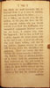 View image of 253 into which he must inevitably fall, is snatched from it as it were by miracle, and can hardly believe his safety.......Let it suffice, my dearest love, for the present, to tell you, that there are the most material reasons why you should conceal, even from Mrs. Lessington, this unexpected explanation between us—let her not know, I conjure you, what has happened; but let her, at least for a while, suppose the secret known only to her and to me. I need not tell you, that your future welfare, and that of my nephew, depend entirely on your still keeping secret this clandestine engagement. There are events that may obviate the inconveniences I forsee.—Ah, Rosalie! from an affection cherished in secret, arose the misfortunes that have embittered my life, and fearful to my imagination is any dissimulation; but I dare not speak farther now—I am unequal to it: already there is too much reason to fear that the violence of our
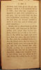 View image of 254emotions may have given rise to conjectures, which it is so necessary for us to stifle. Let what has happened be supposed to arise from indisposition on my part, and on yours from the fears that indisposition occasioned; and try, my best love, to recover yourself as much as you can, and to resume your usual composure." Rosalie, still in astonishment at all she had heard, and surprised at the tranquility with which Mrs. Vyvian now spoke, obeyed her as well as she could; but, as she kissed her hand, and would have bade her adieu, the new sensations she felt, while she considered as her mother the friend whom she had always so tenderly loved, quite overcame her spirits, and her tears blinded her. Mrs. Vyvian, yielding for a moment to the tenderness she had for so many years suppressed, clasped her daughter fondly to her bosom, and, for almost the first time in her life, called her by the dear
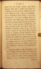 View image of 255name of her child. There was some danger that they would both have indulged too long in these effusions of natual affection, but a rap at the chamber door compelled them hastily to recover themselves. It was a message from the venerable Mr. Hayward, who, returning from his morning walk, had heard of Mrs. Vyvian's being greatly indisposed, and now solicited leave to inquire after her. Rosalie, therefore, who knew that for every wound of the mind Mrs. Vyvian found a resource in the spiritual consolation offered her by this excellent man, hastened to follow her wishes as to leaving her, and remaining only a few moments in another room to recover herself yet a little more, she left the house of her real, and returned to that of her supposed mother. Nothing could be less in harmony with her feelings than the group she found assembled there. A large party from the city, some of whom were entirely unknown to her, had been on a jaunt of
) View image of 256 View image of 256pleasure to a village about ten miles distant, and, on their way back to London, had been engaged by Miss Lessington, who was one of the company, to dine and pass the rest of the day at her mother's house at Hampstead. Some of the gentlemen, who seemed to be of that rank of beings who are called "City Bucks—Young Men of Spirit—Fine Flashy Fellows"——were, in Rosalie's opinion, the rudest and most insupportable set she had ever yet seen: agitated almost beyond endurance, as her spirits were, she was yet under the mortifying necessity of remaining for some time in this company, which did not separate till one of the men proposed finishing their pleasurable party by a jaunt to Ranelagh: it was not early spring, and it was not without difficulty that she was at length allowed to decline going, and saw Miss Lessington and this group of good folks, so perfectly contented with themselves, depart without her.
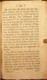 View image of 257She was then left alone with her supposed mother; but to conceal from her the perturbation of her mind was by no means difficult. Mrs. Lessington, whose new manner of life was much more pleasing to her than that she had lived in, the uniform insipidity of a country village, retained, however, so much of her original notable economy, as to use every hour to advantage which was not given to the vigils of the card table; she now, therefore, busily employed herself in domestic arrangements, that she might enjoy with higher relish the rubber of the evening; and she had, therefore, no time to make observations on the appearance of Rosalie. Thus left to herself, she reviewed with astonishment the strange discovery of the day; to find herself the daughter of Mrs. Vyvian, though of her father she was yet ignorant, seemed to be knowledge more flattering, more elevating than any event that could be imagined.——She was now ready to account for a thousand things
) View image of 258 View image of 258 which had before seemed extraordinary. The little affection Mr. Lessington had ever shown for her; his leaving her name entirely out of his will; the indifference of Mrs. Lessington, who sometimes, and particularly lately, had seemed to forget her assumed character of mother, and to express only what she felt, the cold civility of a common acquaintance; the want of even the slightest family resemblance between her and the other children of the family, and innumerable other circumstances which now crowded together upon her recollection. But if on one hand she now saw only strangers among those whom she had hitherto considered as her nearest relations, she beheld in Mrs. Vyvian a mother whom her heart bounded to acknowlege. To be her daughter, to be with her knowledge the wife of Montalbert, left her hardly any thing to wish, but that the hour was come when she might claim at least the latter title, and be received as belonging to a man, who had not disdained to give her that title
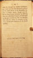 View image of 259when he thought her Rosalie Lessington, and knew not that she inherited a portion of the nobel blood of the Montalbert family: a family which, though now debarred from farther elevation by differing from the established religion, and estranged by foreign connections, had not formerly been inferior, either in antiquity or honour, to the most illustrious of the British nobility. END OF THE FIRST VOLUME |
){kind=link}
){kind=link}
){kind=link}
){kind=link}
){kind=link}
){kind=link}
){kind=link}
){kind=link}
){kind=link}
){kind=link}
){kind=link}
){kind=link}